执行时间 2026-09-18 06:1x–06:2x ｜ 通道：微信开发者工具自动化（cli auto --auto-port 9420 + miniprogram-automator）｜ 设备：iPhone 12/13 模拟器
app.json 全量）
一句话结论：按钮层面全部合规（含"导出"确实走付费墙，不是白点）；
排版层面有 1 处硬伤——pages/month/result 在无账本 / 加载失败时永久显示「加载中…」，
以及 2 处"半截 UI"（金额 / 月份渲染成空白）。
红框 = 本轮确认缺陷页。截图由 miniProgram.screenshot() 直接取自模拟器渲染结果。
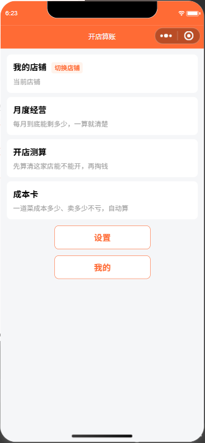
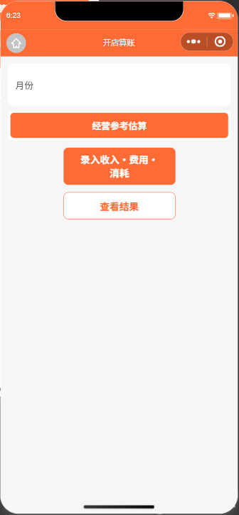
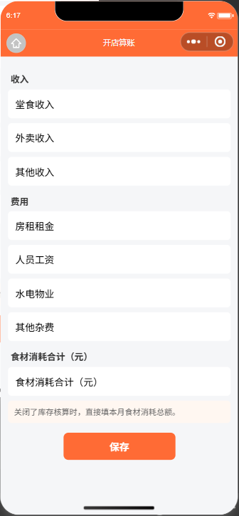
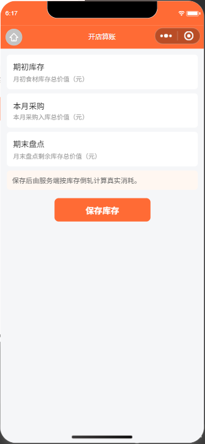
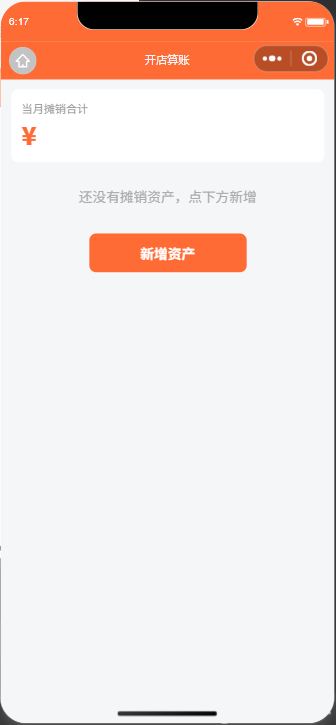
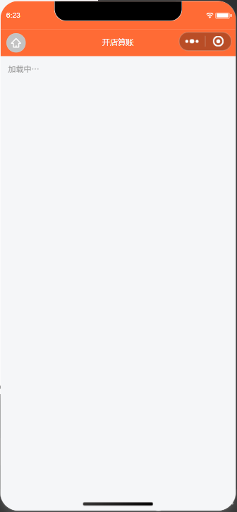
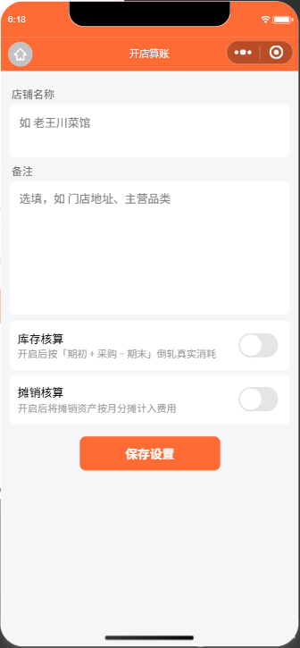
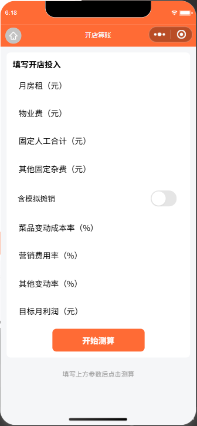
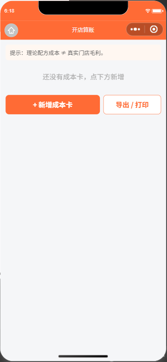
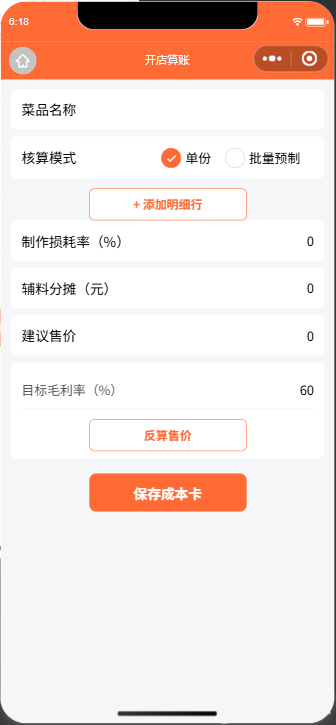
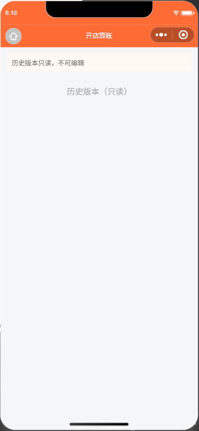
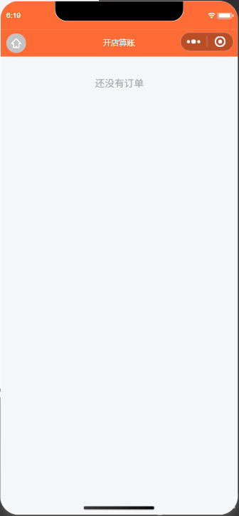
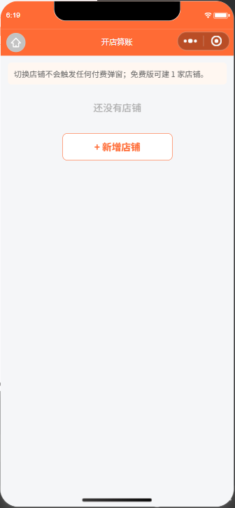
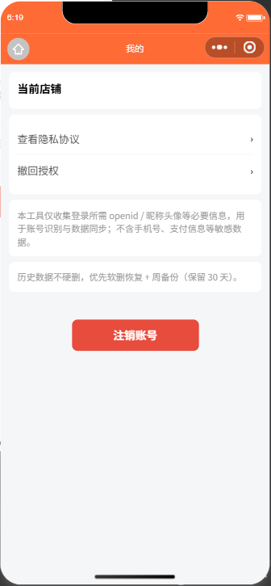
源码判据：
pages/month/result.wxml:1 <view class="container safe-bottom" wx:if="{{!loading && r}}">
pages/month/result.wxml:67 <view wx:else class="container"><view class="muted">{{t.loading}}</view></view>
&& r 让 wx:else 同时承接"加载中"与"r 为空"两种状态：只要 r 为假（账本不存在，或 getLedger 报错被 catch），页面就停在"加载中…"。
实测（两次长等待复跑）：
| 用例 | 等待 | data().loading | data().r | 界面 |
|---|---|---|---|---|
| r3_month_result | 8s | false | null | 加载中… |
| r4_month_result_again | 4s | false | null | 加载中… |
反例已排除全仓 grep pages/**/*.wxml：其余 12 页均为 wx:if="{{!loading}}"，
else 分支只在 loading 时触发，属正确写法；card/index、mine/index 无此分支
⇒ 本条只针对 month/result 一页，不是系统性写法问题。
修法（属快马）：拆三段 —— wx:if="{{loading}}" 加载 →
wx:elif="{{!r}}" 空态/错误态（需新增文案 + 跳 /pages/month/input 的按钮）→ wx:else 结果。
验收（可证伪）：无账本 / 断网时不得再出现"加载中…"；有账本时渲染与现状逐字一致。
| 位置 | 现象 | 根因 | 修法建议 |
|---|---|---|---|
pages/month/amortize |
「当月摊销合计」下方只有一个橙色 ¥，数值空白（见 05_month_amortize.png） |
amortize.js:38 的 data 只初始化 totalFen: 0，未初始化 totalYuan，而 wxml:5 绑定 {{t.cur}}{{totalYuan}} |
data 补 totalYuan: '0.00'，或 wxml 写 {{totalYuan || '0.00'}} |
pages/month/index |
「月份」行右侧空白（见 r2_month_index.png） |
无任何账本时 curMonth === "" 且 months === []（report_run3.json 实抽，非推断），index.wxml:16 绑定 {{curMonth}} |
curMonth 兜底为当前月（ui.nowMonth()） |
⚠️ 两条同属一类：data 缺兜底初值 ⇒ 空数据 / 错误态渲染出"半截 UI"。建议顺手扫一遍全页 data 初值（本轮只实测了这两处）。
| # | 位置 | 现象 | 建议 |
|---|---|---|---|
| L1 | pages/month/input.wxml:24 + :26 |
「食材消耗合计（元）」连续出现两次：:24 是段落小标题（class="sec"）、:26 是字段标签，两处绑同一个 i18n key t.directConsume |
小标题改用短标题（如"食材消耗"）或删掉标题行（:30 的 hint 已说明用途） |
| L2 | pages/month/index |
免费用户只有 1 个 tab（t.freeTab=「经营参考估算」；t.paidTab 需 isPaid 才渲染，index.wxml:28），但 .tab.active 是满宽橙色 ⇒ 视觉上像一条橙色横幅，不像 tab |
单 tab 时隐藏 tab 栏；或加"未选中"对照 / 左右留白 |
| L3 | pages/mine/index.wxml:26 |
「注销账号」用内联样式 background:#e74c3c;color:#fff（红色危险色，语义正确） |
抽成 .btn.danger 类，便于统一改主题（app.wxss:26-31 现只有 .primary/.ghost/.disabled） |
文案14 页 <button> 全量机器抽取（report_run1.json）：
设置 · 我的 · 保存 · 保存库存 · 新增资产 · 保存设置 · 开始测算 ·
+ 新增成本卡 · 导出 / 打印 · + 添加明细行 · 反算售价 · 保存成本卡 ·
+ 新增店铺 · 注销账号
⇒ 无「会员 / 订阅 / 权益」等禁词，付费按钮没有裸"开通"，合 miniprogram/i18n/terms.js 的 forbidden 表。
付费边界pages/card/index.js:84 onExport() —— 先 fetchEntitlement()，非 active 即 openPaywall('export')，
后端 exportData 兜底。免费用户看到的「导出 / 打印」不是"可用但白点"，是付费墙入口 ⇒ 不是漏洞。
主次样式app.wxss:26-31 的 .btn 基类无背景色，
.primary=橙实心 / .ghost=白底橙描边 / .disabled=灰 ⇒ 未观察到误染。
只读门禁pages/month/input.wxml:11/19/27/34 输入框与保存按钮均
disabled="{{readOnly}}"（归档月只读的生效路径存在）。
| 项 | 结论 | 依据 |
|---|---|---|
自动化首次 reLaunch 报 timeout waiting for automator response |
属握手问题，非页面缺陷 | 首轮 01_index ERR，复跑 r1_index 正常 |
"/pages/month/index 会重定向回首页" |
已证伪 | r2 长等待复测 actualPath = pages/month/index；首轮是 reLaunch 与读页的时序错位 |
"month/result 卡在加载" |
已改判为 F1 | 不是卡住（loading === false），是 wx:else 兜底分支语义错 |
| "注销账号红色来自 wxss 样式污染" | 已证伪 | mine/index.wxml:26 是内联样式；mine/index.wxss 无 .btn 规则 |
# 1) 起自动化（复用 IDE 已登录会话，dev-only）
"C:\Program Files (x86)\Tencent\微信web开发者工具\cli.bat" auto \
--project C:\Users\lzj\WorkBuddy\Claw\catering-profit --auto-port 9420
# 2) 依赖（隔离安装，不入用户环境）
cd C:\Users\lzj\.workbuddy\binaries\node\mpauto && npm install miniprogram-automator
# 3) 逐页驱动
set NODE_PATH=C:\Users\lzj\.workbuddy\binaries\node\mpauto\node_modules
node _gui\auto_pages.js ws://127.0.0.1:9420
report_run1.json（14 页 × 按钮文案/class/disabled）、report_run2.json（长等待复测）、
report_run3.json（curMonth / months 实抽）｜ 截图 17 张。specs/dev-specs/core/13_上线前查缺补漏_决策与待办总览.md §7。
写码归快马 inscode；验收走本仓套件（谁写的自测不算证据）。